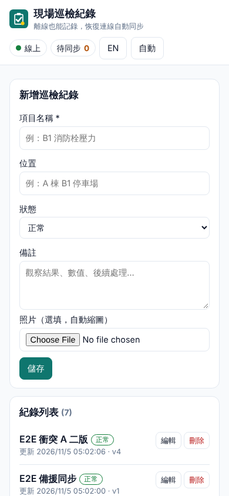
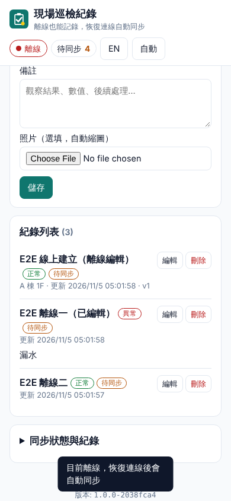
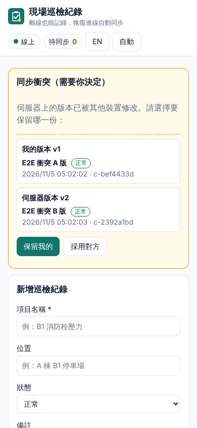

概覽
一個可以「安裝到桌面/手機」的現場巡檢紀錄 App（PWA）。完全離線也能開啟、新增、編輯、刪除，所有寫入先存進瀏覽器的 IndexedDB「待同步佇列（outbox）」，恢復連線後自動送回伺服器；每筆寫入帶 Idempotency-Key，重送也不會重複；兩台裝置改到同一筆時，以伺服器版本號偵測衝突，讓使用者選「保留我的」或「採用對方」。
- 手寫 Service Worker（無 Workbox）：版本化 precache、API 用 stale-while-revalidate、HTML 用 network-first、activate 時清除舊快取、「新版本可用，重新載入」橫幅（postMessage →
skipWaiting()）。 - IndexedDB outbox + Background Sync（Chrome/Edge）；不支援時改用
online事件、App 啟動、15 秒計時器重送。 - Node 伺服器：零執行期相依套件，內建
node:http+node:sqlite（不需編譯原生模組，Windows 直接可用）。 - 狀態 UI：線上/離線指示、待同步數量、衝突數、同步紀錄；zh-TW 預設 / English 切換；自動/淺色/深色主題；手機優先版面。
- 除錯：伺服器 JSONL 分級日誌與
--debug；前端?debug=1；DevTools 可用window.__pwa。



截圖由 npm test 的 Playwright e2e 測試自動產生（390×844、deviceScaleFactor 1）。
快速開始
需求：Node.js 22.13 以上（已在 22.23.4 測試；使用內建 node:sqlite）、Chrome 或 Edge。啟動伺服器不需要 npm install（零執行期相依）；只有跑測試才需要安裝 Playwright。
Windows
- 雙擊
start.bat（會顯示資料夾路徑、啟動伺服器；關閉時顯示 exit code 並暫停）。要改埠號：在命令列執行start.bat --port 8809。 - 用 Chrome 開
http://localhost:8808/。網址列右側出現「安裝」圖示即可安裝成桌面 App。 - 除錯模式：
dev.bat（伺服器 debug 等級日誌），前端開http://localhost:8808/?debug=1。 - 跑測試：
run-tests.bat（第一次會npm ci安裝 Playwright 套件；瀏覽器需另外有 Playwright 的 Chromium，見限制）。
鏈結：start.bat / dev.bat / run-tests.bat（純 ASCII + CRLF）→ pwa.ps1（UTF-8 with BOM）→ node src/cli.js。資料預設在 %ProgramData%\NewMiscCode\08-pwa-offline-sync。
Linux / macOS
cd 08-pwa-offline-sync
./start.sh # 或 npm start；資料預設在 ./data
npm run dev # 等同 --debug
npm install && npm test # 單元測試 + Playwright e2e命令列參數
| 參數 | 環境變數 | 預設 | 說明 |
|---|---|---|---|
--port | PWA_PORT | 8808 | 0 = 隨機埠 |
--host | PWA_HOST | 127.0.0.1 | Service Worker 需要安全來源：只能用 localhost 或 HTTPS |
--data-dir | PWA_DATA_DIR | Windows %ProgramData%\NewMiscCode\08-pwa-offline-sync；其他 ./data | SQLite 檔 pwa-offline-sync.sqlite |
--log-dir | PWA_LOG_DIR | <data-dir>/logs | JSONL 日誌 |
--debug | PWA_DEBUG=1 | 關 | 輸出 debug 等級（每個 HTTP 請求） |
使用說明
- 新增：填「項目名稱」（必填）、位置、狀態（正常/異常/已改善）、備註，可選擇照片（自動縮成最長邊 800px 的 JPEG）。按「儲存」。
- 編輯 / 刪除：列表每筆右側的「編輯」「刪除」。刪除需確認。
- 離線：右上角顯示紅色「離線」。照常新增/編輯，每筆會出現「待同步」標籤，右上「待同步 N」遞增。
- 恢復連線：自動同步（Background Sync 或 online 事件），「待同步」歸零；也可展開「同步狀態與紀錄」按「立即同步」。
- 衝突：若別台裝置先改了同一筆，頁面頂端出現黃色「同步衝突」卡片，左右對照「我的版本 / 伺服器版本」：
- 「保留我的」：以伺服器最新版本為基礎重新送出你的內容（覆寫伺服器）。
- 「採用對方」：丟棄本機修改，改用伺服器版本。
- 更新：伺服器上的前端檔案變更後，下次開啟（或切回分頁）會出現「新版本可用，重新載入」，按「重新載入」即切換到新版。
- 語言 / 主題：右上「EN / 中文」切換語言；主題按鈕循環「自動 → 淺色 → 深色」。設定記在 localStorage。
http://localhost:8808 與 http://127.0.0.1:8808 是不同來源，各自有自己的 Service Worker 與 IndexedDB 資料。逐步驗證指南
A. 自動驗證（建議先跑）
npm install
npm test # 單元測試 11 項 + e2e 9 項
node ../tools/audit-text.mjs . # 編碼稽核（npm run audit）預期：# pass 20、# fail 0。e2e 涵蓋：SW 註冊並控制頁面、precache 內容、Chrome 可安裝性檢查（CDP Page.getInstallabilityErrors）、離線重新載入、離線新增/編輯使佇列遞增、上線後佇列清空且伺服器每筆只有一份、回應遺失後重送仍只有一份、Background Sync 單獨清空佇列、無 Background Sync 時 online 事件備援、兩個 context 的衝突（保留我的 / 採用對方）、照片與刪除、語言/主題切換、SW 更新橫幅流程、全程無 console error。
B. 用 Chrome DevTools 手動驗證
先執行 start.bat（或 npm start），Chrome 開 http://localhost:8808/?debug=1，按 F12 開 DevTools。
| # | 操作 | 預期結果 |
|---|---|---|
| 1 | DevTools → Application → Service workers | 看到 sw.js，Status 為綠點 activated and is running，Source 旁的版本對應頁尾「版本：1.0.0-xxxxxxxx」。 |
| 2 | Application → Cache storage | 有 shell-1.0.0-xxxxxxxx（含 /、/index.html、/js/app.js、/css/app.css、圖示等至少 11 筆）與 api-v1（/api/records）。 |
| 3 | Application → Manifest | 名稱「現場巡檢紀錄 Field Inspection (Offline)」、圖示 192/512/maskable 都能預覽，沒有 Installability 錯誤；網址列出現安裝圖示。 |
| 4 | Network 分頁 → 節流下拉選 Offline（或 Application → Service workers 勾 Offline） | 右上指示變紅色「離線」。 |
| 5 | 按 F5 重新載入 | 頁面照常顯示（Network 分頁中文件的 Size 欄顯示 (ServiceWorker)），既有紀錄仍在（來自 IndexedDB）。 |
| 6 | 新增 2 筆、編輯 1 筆 | 「待同步」變成 3；每筆有橙色「待同步」標籤；「同步紀錄」出現 enqueued。 |
| 7 | Application → IndexedDB → pwa-offline-sync → outbox | 3 筆，每筆有 key（Idempotency-Key）、method、url、body。records 中對應紀錄 pending: true。（IndexedDB 檢視器不會自動刷新，按其重新整理圖示。） |
| 8 | Application → Background services → Background sync 按「Start recording」 | 之後恢復連線時會記錄 outbox-sync 的 dispatch / complete 事件。 |
| 9 | Network 改回 No throttling | 數秒內「待同步」歸零；同步紀錄出現 replay-start / acked / replay-done，來源為 [sw-bgsync]（Background Sync）或 [sw:online-event]（online 事件備援），兩者以 Web Lock 互斥，誰先拿到鎖誰處理。 |
| 10 | 開新分頁 http://localhost:8808/api/records | JSON 中每筆只出現一次，版本號 version 正確（新增 = 1，每次編輯 +1）。 |
| 11 | 衝突：開一般視窗 + 無痕視窗（兩個「裝置」）。A 視窗設 Offline 後修改某筆；B 視窗修改同一筆並儲存；A 恢復連線 | A 頁面頂端出現「同步衝突」卡片；按「保留我的」→ 伺服器版本 +1 並成為 A 的內容；B 重新整理後看到 A 的內容。 |
| 12 | 更新流程：保持頁面開著，修改 public/css/app.css（例如加一行註解）後重啟伺服器，再切回分頁（或在 Console 執行 __pwa.checkUpdate()） | Service workers 面板出現 waiting to activate 的新版本；頁面出現「新版本可用，重新載入」；按「重新載入」後頁尾版本號改變，Cache storage 只剩新的 shell-…。 |
| 13 | Console 執行 await __pwa.counts()、await __pwa.outbox()、await __pwa.log() | 回傳目前佇列、衝突、本機筆數與同步紀錄。 |
C. 實測結果（本機 Linux，Node 22.23.4，Chromium 153）
$ npm test
ok 1 - service worker registers, controls the page and precaches the versioned shell
ok 2 - offline: reload from cache, queue writes, then drain exactly once when online
ok 3 - lost response: server applied the write but the client saw an error -> retry with same key, still one copy
ok 4 - Background Sync alone drains the queue (page fallbacks disabled)
ok 5 - fallback without Background Sync: online event replays the queue
ok 6 - conflict between two devices: keep mine / take theirs
ok 7 - photo is resized client-side and synced; delete syncs as a tombstone
ok 8 - language toggle, theme toggle, no horizontal scroll at 390px
ok 9 - SW update flow: new build -> banner -> reload activates it and removes old cache
ok 10 … ok 20 - server unit tests (idempotency, conflicts, validation, static/SW, logs, config)
# pass 20
# fail 0開發者指南
架構
Browser (page) Service Worker (sw.js) Node server (src/)
┌───────────────────────────┐ postMessage ┌─────────────────────────────┐ HTTP ┌──────────────────────┐
│ app.js UI / i18n / theme │──REPLAY──────▶│ outbox-core.js (shared) │───────▶│ server.js REST API │
│ outbox-core.js │◀─result───────│ replay() under Web Lock │ │ db.js node:sqlite │
│ saveLocal(): IndexedDB │ │ sync event "outbox-sync" │ │ records (version) │
│ records + outbox (1 tx) │◀─Broadcast────│ fetch: precache / SWR / NF │ │ idempotency (key) │
└───────────────────────────┘ Channel └─────────────────────────────┘ │ logger.js JSONL │
└──────────────────────┘public/js/outbox-core.js：頁面與 SW 共用（classic script，SW 以importScripts載入）。IndexedDB 資料庫pwa-offline-syncv1，物件庫records、outbox（autoIncrementseq、索引byRecord）、conflicts、log（最多 200 筆）、meta。public/sw.js：快取策略、Background Sync、REPLAY 訊息、更新流程。__BUILD_ID__由伺服器在送出時替換成套件版本-外殼檔案 SHA-256 前 8 碼，所以任何外殼檔案變更都會讓 SW 位元組改變 → 瀏覽器安裝新版。public/js/app.js：UI、SW 註冊與更新橫幅、同步協調；public/js/i18n.js：字串表。src/server.js（HTTP + 靜態檔 + API）、src/db.js（schema、冪等、版本衝突）、src/logger.js、src/config.js、src/cli.js。scripts/gen-icons.mjs：純 Node 產生 SVG/PNG 圖示（npm run icons）。
快取策略
| 請求 | 策略 | 快取名稱 | 離線時 |
|---|---|---|---|
導覽（HTML，mode: navigate） | Network-first（3 秒逾時，啟用 navigation preload） | shell-<BUILD_ID> | 回傳快取的 /／/index.html |
| 同源靜態檔（JS/CSS/圖示/manifest） | Cache-first（install 時 precache，cache: 'reload' 繞過 HTTP 快取） | shell-<BUILD_ID> | 由快取提供 |
GET /api/records | Stale-while-revalidate；新資料與快取不同時 postMessage API_UPDATED 給頁面 | api-v1 | 回傳快取；無快取時 503 JSON {offline:true} |
GET /api/health、/sw.js | 不攔截（永遠走網路） | - | - |
| POST / PUT / DELETE | 不攔截（寫入一律先進 IndexedDB outbox） | - | - |
activate 時刪除所有不在 [shell-<BUILD_ID>, api-v1] 的快取，並 clients.claim()。新版本安裝後不會自動 skipWaiting()；頁面偵測到 installed 且已有 controller 時顯示橫幅，使用者按「重新載入」→ postMessage({type:'SKIP_WAITING'}) → controllerchange → location.reload()（只重載一次）。
同步協定
- 本機寫入：
saveLocal()在同一個 IndexedDB 交易中更新records（pending: true）並新增 outbox 項目{seq, method, url, recordId, kind, body, key, attempts}。key=crypto.randomUUID()，入列時決定、每次重送都相同。 - 觸發重送：(a) 註冊 Background Sync tag
outbox-sync；(b) 線上時立即請 SW 重送（REPLAY訊息）；(c)online事件；(d) App 啟動；(e) 有待同步項目時每 15 秒。全部透過 Web Lockspwa-outbox-replay序列化，多分頁/SW 同時觸發也只會一個在跑。 - 依序送出（
seq遞增）。PUT/DELETE 的baseVersion在送出時取本機記錄的version（=最後一次伺服器確認的版本），所以「新增後又編輯」會自然接續：POST → v1，PUT(base 1) → v2。 - 回應處理：2xx → 刪除項目、寫入伺服器版本；409 → 移到
conflicts（同一筆後續項目一併併入「我的版本」）；網路錯誤/5xx/408/429 → 停止、attempts+1、保留項目（Background Sync 會被 reject 以便瀏覽器退避重試）；其他 4xx → 丟棄並標示「被拒絕」。 - 伺服器冪等：
Idempotency-Key已存在且請求指紋（method + path + body 的 SHA-256）相同 → 直接回傳先前儲存的狀態碼與內容（標頭Idempotent-Replayed: true），不再執行；指紋不同 → 422。只記錄 2xx 與 409（驗證錯誤可修正後重試）。變更與冪等紀錄在同一個 SQLite 交易中提交。 - 衝突：
baseVersion ≠ 伺服器 version→ 409{error:'conflict', server:{…}}。「保留我的」= 以server.version為新基準、新的 key 重新入列；「採用對方」= 本機改成伺服器版本。 - 拉取：重送後
GET /api/records並合併：有待同步或衝突的記錄不覆蓋；本機版本較新（例如 SWR 回傳舊快取）不覆蓋；刪除以 tombstone（deleted: true+ 版本）保存，舊快取無法讓它「復活」。
API
| 方法 | 路徑 | 請求 | 回應 |
|---|---|---|---|
| GET | /api/health | - | {ok, version, buildId, records, stats} |
| GET | /api/records[?since=ISO] | - | {records:[…含 tombstone], serverTime} |
| GET | /api/records/:id | - | {record} / 404 |
| POST | /api/records | 標頭 Idempotency-Key；{id, title, location?, note?, status?, photo?} | 201 {record}；id 已存在 409 |
| PUT | /api/records/:id[?force=1] | Idempotency-Key；{baseVersion, …欄位} | 200 {record}；409 {error:'conflict', server}；404 |
| DELETE | /api/records/:id | Idempotency-Key；{baseVersion} | 200 {record:{deleted:true}}（軟刪除）；409 |
| POST | /api/log | {level, msg, data} | 204（?debug=1 時前端錯誤回報） |
錯誤格式：{error: 'code', message}。代碼：title_required、bad_status、bad_photo、bad_id、base_version_required、idempotency_key_reused(422)、conflict(409)、not_found、too_large(413，上限 2 MB)。X-Client-Id 標頭會記為 updatedBy。
資料庫 Schema（SQLite）
records(id TEXT PK, title TEXT NOT NULL, location TEXT, note TEXT,
status TEXT CHECK (status IN ('ok','issue','fixed')), photo TEXT, -- data:image/jpeg;base64,…
version INTEGER NOT NULL DEFAULT 1, deleted INTEGER NOT NULL DEFAULT 0,
created_at TEXT, updated_at TEXT, updated_by TEXT)
idempotency(key TEXT PK, fingerprint TEXT, status INTEGER, body TEXT, created_at TEXT)
meta(k TEXT PK, v TEXT)WAL 模式。Store.pruneIdempotency() 可清除 7 天前的冪等紀錄（目前未排程）。
如何擴充
- 新增欄位：
src/db.js的 SCHEMA（舊資料庫需ALTER TABLE）、validateInput()、rowToRecord()；前端outbox-core.js的FIELDS、index.html表單、app.js的onSubmit()/renderRecords()、i18n.js字串。 - 新增外殼檔案：同時加到
src/server.js的SHELL_FILES（影響 BUILD_ID）與public/sw.js的SHELL（precache）。 - 新增語言：在
public/js/i18n.js的STRINGS加一組；語言切換按鈕目前是 zh-TW ⇄ en 兩者切換。 - 改 IndexedDB 結構：
DB_VERSION+1 並在onupgradeneeded中遷移。 - 多使用者/驗證：目前無登入（見限制）；可在
handleApi()前加驗證並把使用者寫入updated_by。
版本
| 元件 | 版本 | 備註 |
|---|---|---|
| Node.js | ≥ 22.13（測試 22.23.4） | node:sqlite（內建 SQLite 3.53.4），以 --disable-warning=ExperimentalWarning 隱藏實驗性警告 |
| 執行期 npm 套件 | 無 | node:http、node:sqlite、node:crypto |
| playwright（dev） | 1.63.0（固定） | Chromium 153.0.8010.12；e2e 用 channel: 'chromium'（新 headless，支援 Background Sync） |
| App | 1.0.0 | BUILD_ID 例：1.0.0-427ad450 |
變更紀錄
- 1.0.0（2026-11-05）：初版。手寫 SW（precache/SWR/network-first/更新橫幅）、IndexedDB outbox + Background Sync + 備援、冪等鍵、版本衝突 UI、照片縮圖、zh-TW/en、深淺色、JSONL 日誌、Windows 啟動器、20 項自動測試。
除錯與日誌
伺服器
- 日誌檔：
<data-dir>/logs/server-YYYY-MM-DD.jsonl（Windows 預設%ProgramData%\NewMiscCode\08-pwa-offline-sync\logs），每行一個 JSON：{ts, level, msg, …}，等級debug / info / warn / error。 - 預設 info：啟動、每次寫入（
mutation：method、path、status、key、replayed、version）、前端回報。--debug（dev.bat/npm run dev）另外記錄每個 HTTP 請求與耗時（http）。 - 未預期錯誤記為
unhandled（含 stack 與reqId），回應 500{error:'internal', reqId}。 GET /api/health的stats：請求數、冪等重播數replays、衝突數conflicts。
# PowerShell：查看最近的寫入
Get-Content "$env:ProgramData\NewMiscCode\08-pwa-offline-sync\logs\server-*.jsonl" -Tail 20 -Encoding UTF8
# Linux
tail -f data/logs/server-*.jsonl前端
?debug=1：console.debug輸出（DevTools Console 需勾選 Verbose 等級）、同步紀錄面板自動展開、SW 也輸出 debug、window.onerror/ unhandledrejection 送到POST /api/log。- 同步紀錄（IndexedDB
log物件庫，最多 200 筆）：enqueued / replay-start / acked / conflict / network-error / rejected / replay-done / online / offline / sw-activated，方括號內為來源（page、sw:<原因>、sw-bgsync）。 window.__pwa：counts()、records()、outbox()、conflicts()、log()、sync()、replay()、pull()、checkUpdate()、applyUpdate()、state、core（全部低階函式）。?nofallback=1：關閉 online 事件/計時器備援，只靠 Background Sync（測試用）。- SW 的 console 在 DevTools → Application → Service workers → 「Inspect」或
chrome://serviceworker-internals。衝突時伺服器回 409，Chrome 會在 SW 的 console 顯示一行紅色「Failed to load resource: 409」，這是協定的一部分，不是錯誤。
App 不會攔截 F12 或右鍵，也不會阻擋 DevTools。
限制與疑難排解
限制
- 沒有登入/權限；所有裝置共用同一份資料。
?force=1可略過版本檢查（目前 UI 未使用）。 - 衝突以「整筆」為單位（不做欄位層級合併）。
- 照片以 base64 存在 SQLite 與 IndexedDB（縮圖後約 30–150 KB），不適合大量高解析照片。
- Background Sync 只有 Chromium 系（Chrome/Edge）支援；Firefox/Safari 走 online 事件/啟動/計時器備援，頁面關閉時不會同步。
- Service Worker 需安全來源：只能用
localhost/127.0.0.1或 HTTPS。用手機連電腦的區網 IP（http）時 SW 不會啟用，需自行架設 HTTPS 反向代理。 - IndexedDB 本機 tombstone 不會自動清除；冪等紀錄有清除函式但未排程。
疑難排解
| 症狀 | 原因 / 處理 |
|---|---|
啟動時 Port 8808 is in use | 改用 start.bat --port 8809。 |
node:sqlite 找不到 / ERR_UNKNOWN_BUILTIN_MODULE | Node 太舊，請升級到 22.13 以上。 |
| 離線重新載入出現「無法連上這個網站」 | 第一次載入時 SW 尚未安裝完成，或用了 Ctrl+Shift+R / 勾了 Disable cache。線上時先正常開一次（頁尾出現版本號）再測。 |
| 改了前端檔案卻沒有更新橫幅 | 伺服器在啟動時計算 BUILD_ID，需重啟伺服器；再切回分頁或執行 __pwa.checkUpdate()。 |
| 「待同步」一直不歸零 | 展開「同步狀態與紀錄」看 network-error/rejected；確認伺服器在跑；按「立即同步」。被拒絕（400）的項目會丟棄並在紀錄標示「被拒絕」。 |
| 想清空重來 | App 內「清除本機資料」；或 DevTools → Application → Storage → Clear site data；伺服器端刪除資料資料夾中的 pwa-offline-sync.sqlite*。 |
run-tests.bat 找不到瀏覽器 | e2e 需要 Playwright 1.63.0 的 Chromium。一般電腦執行 npx playwright install chromium（需可連網）。 |
| e2e 中 Background Sync 測試失敗 | 舊版 headless shell 會回報 Background Sync is disabled；測試使用 channel: 'chromium'（新 headless）。 |
English summary
08-pwa-offline-sync is an installable, offline-first field inspection notes app. Writes are stored in an IndexedDB outbox (record + queue item in one transaction) and replayed in order by the Service Worker when connectivity returns: via Background Sync (outbox-sync) where supported, otherwise on the online event, app start, or a 15 s timer. Every queued write carries a fixed Idempotency-Key; the server stores the response per key in the same SQLite transaction as the mutation, so retries after lost responses never duplicate. Records have a server version; a stale baseVersion yields 409 and the UI lets the user Keep mine (rebase + resend) or Use theirs.
- Hand-written SW: versioned precache (
shell-<version-hash>), network-first HTML, cache-first assets, stale-while-revalidate API GET, old-cache cleanup on activate, update banner withSKIP_WAITINGvia postMessage. - Server: Node ≥ 22.13, zero runtime dependencies (
node:http+node:sqlite), JSONL logs with levels,--debug. Data: Windows%ProgramData%\NewMiscCode\08-pwa-offline-sync, else./data. - Run:
start.bat(Windows) ornpm start, openhttp://localhost:8808/. Debug:?debug=1,window.__pwa. - Tests:
npm test= 11 server tests + 9 Playwright e2e tests (SW control, offline reload, queueing, exactly-once drain, lost-response retry, Background Sync only, online-event fallback, two-context conflicts, photo + delete, i18n/theme, SW update flow, no console errors).